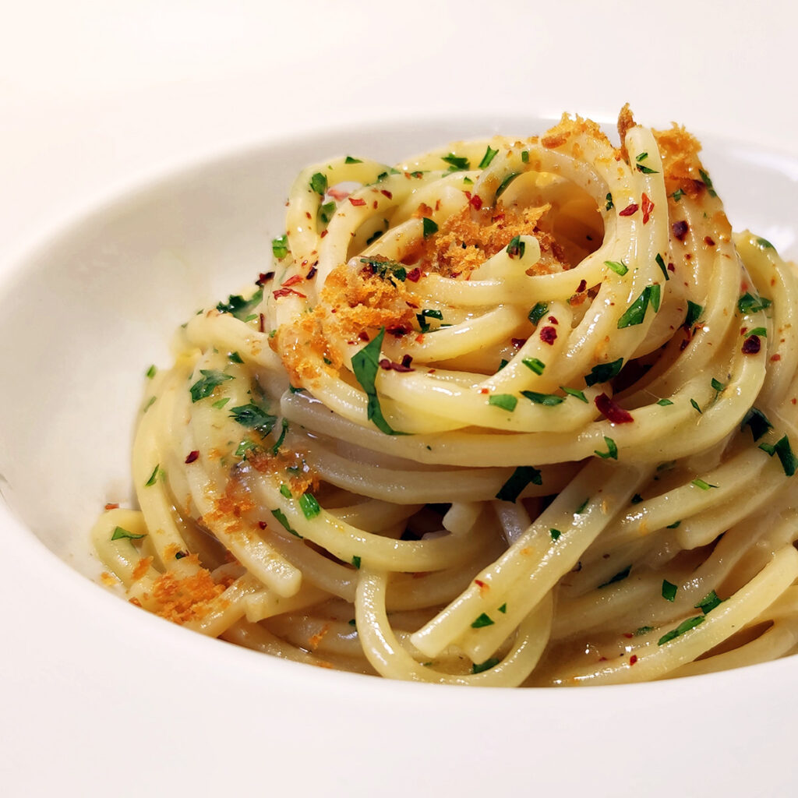

Spaghetti alio, olio e peperoncino

Aglio, olio e peperoncino defines Italian food like no other. Its simplicity, focusing on quality ingredients
and letting their flavors shine through is what is most important in Italian cooking.
This dish is a perfect example of how a few simple components can come together to create a masterpiece.
Ingredients
Serves 2 people
- 300 g spaghetti
- 70 ml extra vergin olive oil
- 3 garlic cloves, chopped
- 3 fresh spicy chili peppers,
chopped
- 2-3 tbsp chopped leaf parsley
- salt
How to "Spaghetti"
- Bring a large pot of salted water to a boil.
- Throw in your spaghetti, and cook start cooking, frequently stirring
- While the pasta cooks, pour the olive oil into a pan and set over low heat.
- Add the garlic and chili pepper and simmer gently for a few minutes. Pay attention to the garlic and reduce the heat if necessary.
The garlic should not burn, but fry gently.
- Once the pasta is cooked al dente, move it directly to the pan with the oil, the garlic and the chilli using a pair of
kitchen tongs, or a big fork. There will be no need to drain the pasta, and the extra water which will inevitably go in the pan will help making the sauce
thicker and creamier.
- Start stirring vigorously and turn off the heat. At this point add the parsley
- Plate your spaghetti in a nice, large plate and serve piping hot!
- Buon Appetito!
all rights goes to Luna Trapani